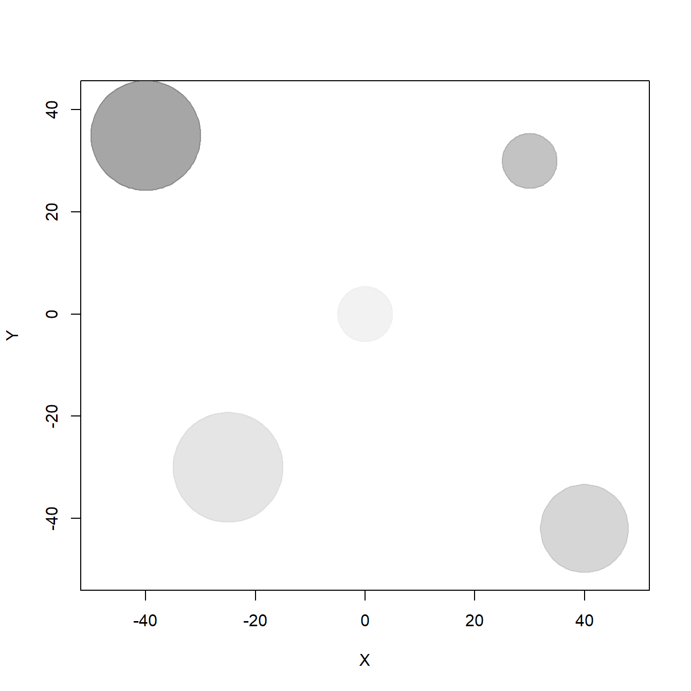
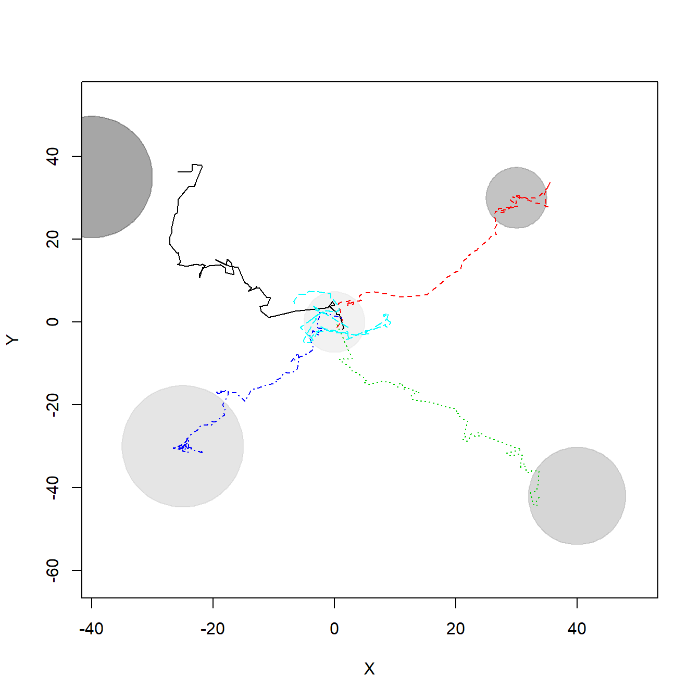
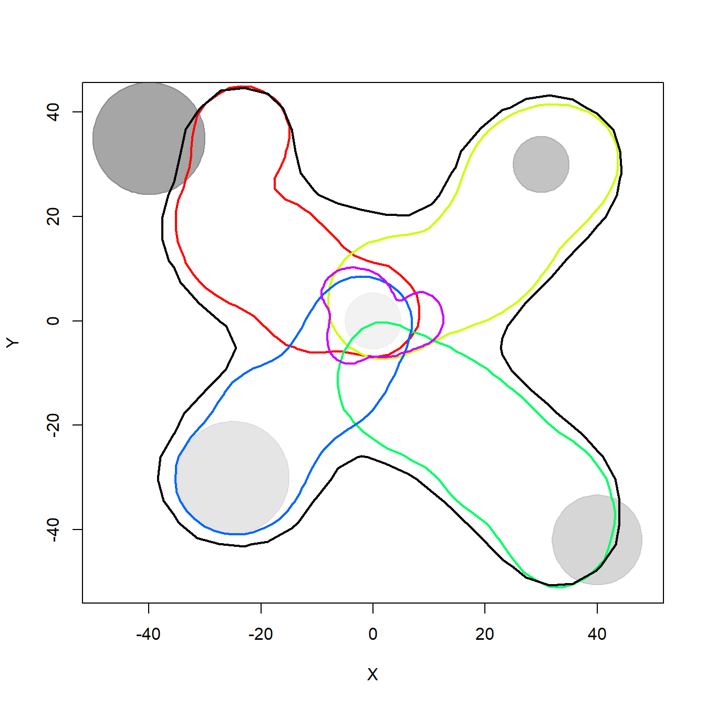
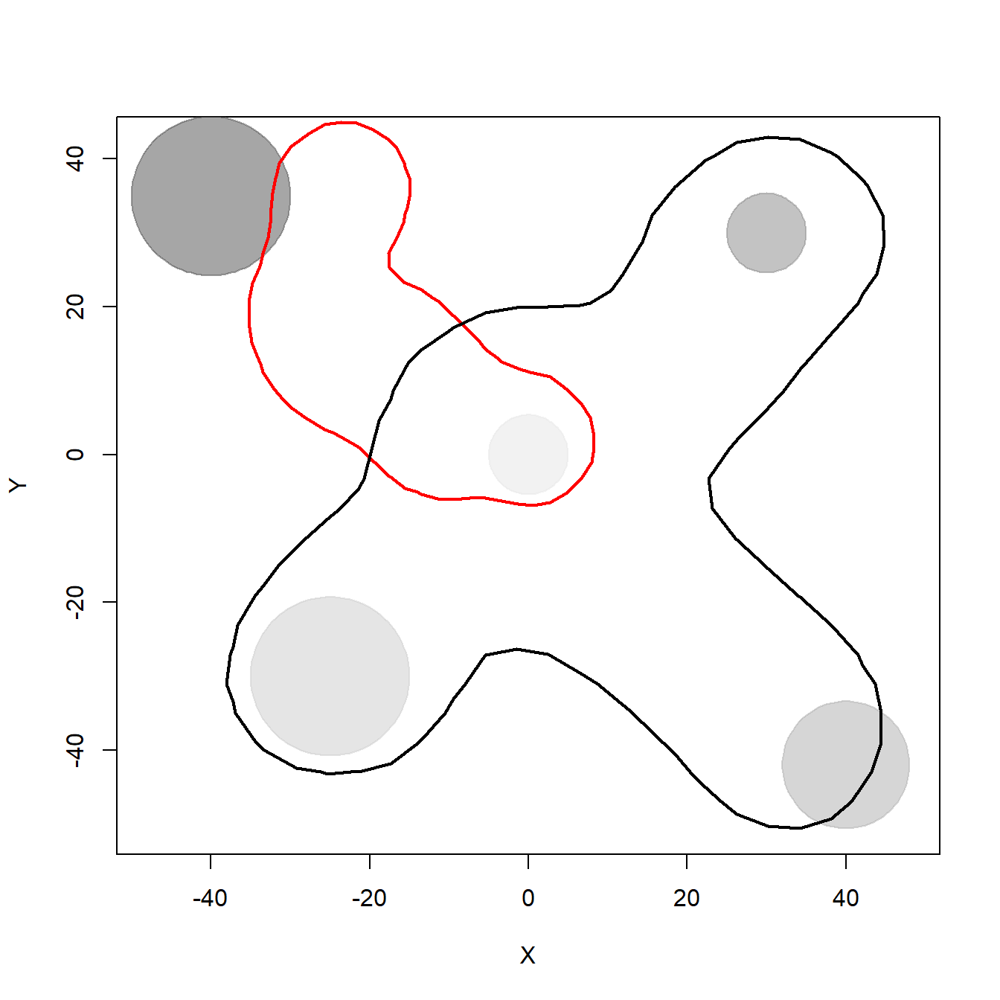
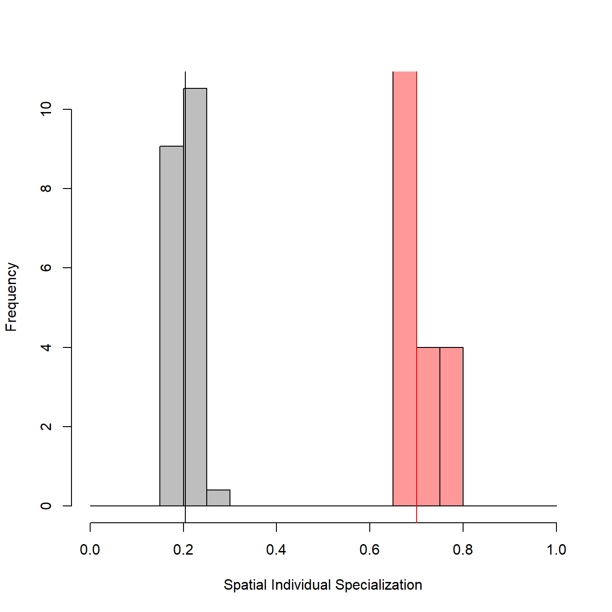
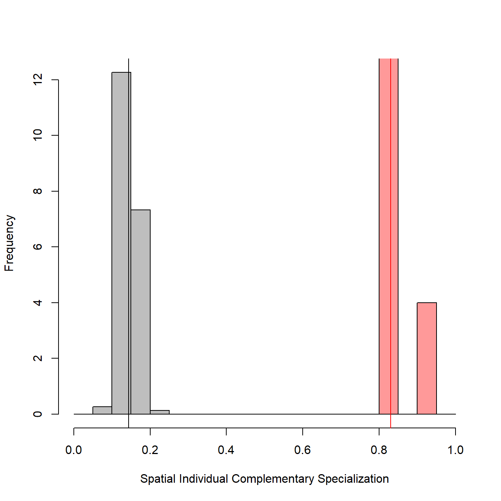

Individuals naturally differ from each other within populations. These differences manifest in their physiology, morphology, as well as in their behavior and preferences. To investigate the causes and consequences of interindividual variation, Bolnick et al. (2003) have related that with niche theory and coined the term “individual specialization”. According to this concept, a specialist individual would be one whose niche is much narrower than the niche of the population it is part of. As a consequence, to be considered generalist a population can follow different scenarios: to be composed by generalist individuals with similar niches, by specialists individuals with distinct niches, or by a gradient between these extremes.
In this context, the niche is generally represented by the type and amount of food items or other resources that are consumed by individuals. As resources are heterogeneously distributed in space along different habitats, it is expected that individual specialization leaves its shadow over space, or even that different environments or geographical space itself may be viewed as resources, so that individuals may be more or less specialists regarding their movement patterns, habitat selection, and use of space.
Here we describe how to calculate the Spatial Individual Specialization index (SpatIS) and the Spatial Individual Complementary Specialization Index (SpatICS) using the R function SpatIS, based on movement data of individuals of the same population. We also use the function SpatIS.randomize to test if SpatIS and SpatICS are significant for a population, i.e., if they are different from what it would be expected at random, if individuals were not specialists in their use of space. To that end, first we simulate a virtual landscape with some different resources located heterogeously in space. Then we simulate five individuals that present preferences for different types of resources, which is reflected in their movement patterns. Finally we calculate SpatIS and SpatICS and run SpatIS.randomize to test for significance and statistical power for these indices, for this simulated population.
To represent the resource distribution in space, we are going to create five resource items (e.g. trees) located in a bidimensional landscape at locations (-40,35), (30,30), (40,-42), (-25,-30), and (0,0), with different sizes (or radii, in meters: 10, 5, 8, 10, 5). To draw that, we use the function draw_circle from plotrix package.
# Load library
library(plotrix)
# Location of resources
x.resources <- c(-40, 30, 40, -25, 0)
y.resources <- c(35, 30, -42, -30, 0)
radius <- c(10, 5, 8, 10, 5)
# Draw landscape with prefered resources
cols <- grey.colors(length(x.resources), alpha = 0.5) # colors for each resource
# draw a landscape that encompasses the position of all resources
matplot(x.resources, y.resources, type="n",
xlim=c(1.2*min(x.resources),1.2*max(x.resources)),
ylim=c(1.2*min(y.resources),1.2*max(y.resources)),
xlab = "X", ylab = "Y")
for(i in 1:length(x.resources)) {
draw.circle(x.resources[i], y.resources[i], radius = radius[i], border = cols[i],
col = cols[i]) # draw resources
}
To generate individual trajectories we are going to simulate 100-step paths of five individuals (e.g. bats) that follow a biased random walk, i.e., a random walk with attraction from a certain point in space (here defined by the location of resource items). Each individual starts near the origin (0,0) and will move biased towards a different resource item, with greater or lower intensity, what represents their preference for distinct resources at different degrees. This is only one possible mechanism that may generate individuals to present different movement and space use patterns, but it was used here to generate location points and exemplify the calculation of SpatIS and SpatICS.
Biased random walk code was kindly shared by and adapted from Prof. Juan M. Morales. The step length of walks is difined by a Weibull distribution (defined by its shape and scale parameters) and turning angles are drawn from a wrapped Cauchy distribution (with \(\mu\) and \(\rho\) parameters). In turn, the prefered direction of travel \(\mu\) is a function of \(\beta\) - the coeffient of attraction or bias - which controls how strongly individuals’ movements are biased towards a certain resource. Below we simulate these five tracks.
# Load library circular
library(circular)
# Seed for random number generation
set.seed(122)
# Random walk parameters
# Coefficient of attraction or bias - positive values correspond to attraction,
# negative values correspond to avoidance
beta <- c(1.5, 2, 1.8, 2.2, 0.1)
rho <- 0.6 # Concentration parameter around the bias absolute angle
scale <- 1 # Scale of the Weibull distribution for step length
shape <- 1 # Shape of the Weibull distribution for step length
# Number of individuals
ntracks <- 5
# Number of steps per trajectory/individual
nsteps <- 100
# Matrices of x and y locations - initialized with NA
X <- matrix(NA, nsteps, ntracks)
Y <- matrix(NA, nsteps, ntracks)
# Coordinates of the point of attraction/repulsion for each individual
# These coordinated correspond to the 5 different resources created in the landscape
xh <- x.resources
yh <- y.resources
# Simulating tracks
for(i in 1:ntracks){
x <- numeric(nsteps)
y <- numeric(nsteps)
h <- numeric(nsteps)
steps <- numeric(nsteps)
# Initial positions of all individuals around the point (0,0)
h[1] <- runif(1,1,2*pi)
x[1] <- rnorm(1,0,1)
y[1] <- rnorm(1,0,1)
# Simulating following positions
for(t in 2:nsteps){
adj <- xh[i] - x[t-1]
op <- yh[i] - y[t-1]
r <- sqrt(adj^2 + op^2)
ya <- sin(h[t-1]) + beta[i]*(op/r)
xa <- cos(h[t-1]) + beta[i]*(adj/r)
m_t <- atan2(ya,xa)
h[t] <- rwrappedcauchy(1,mu=circular(m_t),rho=rho)
steps[t-1] <- rweibull(1,scale=scale, shape=shape)
x[t] <- x[t-1] + cos(h[t])*steps[t-1]
y[t] <- y[t-1] + sin(h[t])*steps[t-1]
}
X[,i] <- x
Y[,i] <- y
}
# Draw landscape with prefered resources
matplot(X,Y, type="n", xlim=c(1.4*min(X),1.4*max(X)), ylim=c(1.4*min(Y),1.4*max(Y)))
for(i in 1:length(x.resources)) {
draw.circle(x.resources[i], y.resources[i], radius = radius[i], border = cols[i],
col = cols[i])
}
# Plot individual trajectories
matplot(X, Y, type="l", pch=16, col=1:ntracks, asp=1,
xlim=c(min(X),max(X)), ylim=c(min(Y),max(Y)), add = T)
To calculate SpatIS and SpatICS, first we have to load the SpatIS function. To do that we may use the source function, loading it directly from Github - which may not run depending on your Operational System - or downloading SpatIS source code into your local computer, unpacking it and loading it from your local environment. Below we show both options.
# Loading from the web
# source("https://github.com/LEEClab/SpatIS/blob/master/code/spatis_source_code_v1_0.R")
# Loading from the local environment, after downloading and unpacking
# Path to code folder in your computer
# setwd("/home/leecb/Github/SpatIS/code/")
source("../code/spatis_source_code_v1_0.R")## Warning: package 'adehabitatHR' was built under R version 3.6.2Then it is necessary to transform individuals’ locations into a SpatialPointsDataFrame (a data frame with spatial information embedded; take a look here for more information), so that one of the columns indicates the individual ID. Below we show an example of how the space use data may be organized and how it looks like after the transformation into a SpatialPointsDataFrame.
# Organizing individual locations as an example of tabular data
ids <- sapply(1:ncol(X), rep, times = nrow(X)) # Generating array of IDs
ids.vector <- as.vector(ids)
X.vector <- as.vector(X) # Array of x positions
Y.vector <- as.vector(Y) # Array of y positions
# Creating a data frame with an ID column that represents individuals
data <- data.frame(ID = ids.vector, X = X.vector, Y = Y.vector)
# This is how the original data may look like
head(data)## ID X Y
## 1 1 1.3216090 -1.740196
## 2 1 1.5943292 -1.466210
## 3 1 0.7755649 1.762281
## 4 1 0.8398471 1.803869
## 5 1 0.3697159 1.910707
## 6 1 0.2945413 2.348632# Transforming the original data into a SpatialPointsDataFrame
spdata <- SpatialPointsDataFrame(coords = cbind(data$X, data$Y),
data = subset(data, select = -c(X,Y)))
# This is how the SpatialPointsDataFrame will look like
head(spdata)## coordinates ID
## 1 (1.32161, -1.7402) 1
## 2 (1.59433, -1.46621) 1
## 3 (0.775565, 1.76228) 1
## 4 (0.839847, 1.80387) 1
## 5 (0.369716, 1.91071) 1
## 6 (0.294541, 2.34863) 1
## Coordinate Reference System (CRS) arguments: NAAfter transforming the original data, it is easy to run SpatIS with this SpatialPointsDataFrame as input by specifying which column corresponds to individual ID. SpatIS is based on the estimation of utilization distributions (UDs) through kernelUD function and the calculation of the overlap between UDs through kerneloverlap function (both functions from the adehabitatHR package. SpatIS assess the overlap in the utilization distribution or area of use between individuals and the whole population (assumed to be the combination of all individuals sampled). SpatICS is similar but assesses the overlap between the UD of each individual and the rest of the population (all individuals pooled but the one being analyzed). SpatIS and SpatICS are then defined as
\[ \begin{aligned} SpatIS_{i,pop} = 1 - OverlapIndex_{i,pop} \\ SpatICS_{i,rest} = 1 - OverlapIndex_{i,rest} \end{aligned}\]
where \(OverlapIndex_{i,pop}\) is a measure of overlap between the space use of the individual i and the whole population (pop), and \(OverlapIndex_{i,rest}\) is a measure of overlap between the space use of the individual i and the rest of the population (rest, all individuals polled but the individual i). As they based on the calculation of the overlap of space use, SpatIS and SpatICS are direct adaptations from the spatial overlap indices described in Fieberg and Kochanny (2005), with the modification that one of the individuals for which the overlap is calculated is represented by the whole (or rest of the) population.
We defined the default method to assess the overlap in space use the VI index from the kerneloverlap function, that calculates the intersection between the volumes of the individual and the population UDs. However, since other methods to assess overlap in space use are available, SpatIS and SpatICS are also defined for each of them. See the Appendix S4, Fieberg and Kochanny (2005), and the documentation of kerneloverlap function for more details about these other methods.
There are two options for calling SpatIS. One is to create in the input SpatialPointsDataFrame a “new individual” that represents the whole population (or the rest of the population, for SpatICS), with locations of all individuals (or the rest of the individuals, for SpatICS) gathered, set a name for this “individual” (e.g. pop or pop_rest) and use it as input for the argument “population ID” when calling SpatIS. The other one is to let the function do it for you, if this “super individual” that represents the whole (rest of the) population is not present in the dataset yet (in this case, the option population.ID should be set to NULL, the default). We use the latter option in this tutorial, since we do not have an ID that represents the whole (rest of the) population. We put the results into an object called observed.SpatIS.
Therefore, the SpatIS function has at least 5 arguments:
data, the input SpatialPointsDataFrame.individuals.col, the a string with the name of the column containing individual ID names.population.ID, the ID (temporary name) in the column individuals.col that represents the whole population (or the rest of the population).index, that controls which index is to be calculated: spatis, spatics, or both (use c("spatis", "spatics")). The name of the indices is not case sensitive.method, that controls which method to assess the overlap between UDs or areas of use should be used - these are passed to the kerneloverlap function. Options are “VI”, “HR”, “PHR”, “BA”, or “UDOI”. For more information, see the ?kerneloverlap function help and the Appendix S4.Besides these five, other arguments for the kernelUD and kerneloverlap function are also accepted.
# Reploting data
# cor <- rainbow(length(unique(spdata$ID)))
# plot(coordinates(spdata)[,1], coordinates(spdata)[,2], type = "n")
# points(spdata, pch = 20, col = cor[as.factor(spdata$ID)])
# Calculating SpatIS and saving the results into the object observed.SpatIS
observed.SpatIS <- SpatIS(spdata, individuals.col = "ID", population.ID = NULL,
index = c("spatis", "spatics"), method = "VI")The result of SpatIS is a list of six elements:
data: The input locations points, a SpatialPointsDataFrame:# First lines
head(observed.SpatIS$data)## coordinates ID
## 1 (1.32161, -1.7402) 1
## 2 (1.59433, -1.46621) 1
## 3 (0.775565, 1.76228) 1
## 4 (0.839847, 1.80387) 1
## 5 (0.369716, 1.91071) 1
## 6 (0.294541, 2.34863) 1
## Coordinate Reference System (CRS) arguments: NA# Last lines
tail(observed.SpatIS$data)## coordinates ID
## 495 (-4.3938, 6.79819) 5
## 496 (-5.91664, 6.63695) 5
## 497 (-5.99262, 6.48406) 5
## 498 (-6.6824, 4.99822) 5
## 499 (-6.65972, 4.89188) 5
## 500 (-6.56448, 4.39379) 5
## Coordinate Reference System (CRS) arguments: NAparms: The parameters used as input to call SpatIS:# Parameters
observed.SpatIS$parms## $individuals.col
## [1] "ID"
##
## $population.ID
## NULL
##
## $index
## [1] "spatis" "spatics"
##
## $method
## [1] "VI"SpatIS.individual: the value of the Spatial Individual Specialization index for each one of the five individuals (i.e., the level of overlap between their utilization distribution and the population’s utilization distribution, a value from 0 to 1):# Individual SpatIS
observed.SpatIS$SpatIS.individual## 1 2 3 4 5
## 0.6661083 0.6567337 0.7330505 0.6594467 0.7847597SpatIS.population: the value of the Spatial Individual Specialization index for the whole population, defined as the individual SpatIS averaged over all individuals. Note that, to calculate SpatIS and SpatICS, a “new individual” representing the whole population is created. However, this is only for the calculation of the index for the individuals. This SpatIS population value shown below is the average of the individual SpatIS values, i.e., the average of the overlap between each individual and this “new individual” that represents the whole population. It represents how specialist is the population as a whole.# Population SpatIS
observed.SpatIS$SpatIS.population## [1] 0.7000198SpatICS.individual: the value of the Spatial Individual Complementary Specialization index for each individual (i.e., the level of overlap between their utilization distribution and the rest of the population’s utilization distribution, a value from 0 to 1):# Individual SpatICS
observed.SpatIS$SpatICS.individual## 1 2 3 4 5
## 0.8141360 0.8141360 0.8117282 0.9064550 0.8040123SpatICS.population: the value of the Spatial Individual Complementary Specialization index for the whole population, defined as the SpatICS averaged over individuals. Note that, to calculate SpatICS, a “new individual” representing the rest of the population is created. However, this is only for the calculation of the index for the individuals. This SpatICS population value shown below is the average of the individual SpatICS values, i.e., the average of the overlap between each individual and this “new individual” that represents the rest of the population. It represents how specialist is the population as a whole, based on the idea of complementary specialization.# Population SpatICS
observed.SpatIS$SpatICS.population## [1] 0.8300935By definition, SpatICS is generally higher than SpatIS.
Below we plot the 95% kernel density estimation (KDE) isopleths for each individual and the whole population to illustrate the overlap in their space use, that is the basis for the calculation of SpatIS. The black line shows the population 95% KDE isopleth, and the colored lines represent different individuals’ 95% KDE areas. This is just an illustration, however, since the values calculated above were based on the overlap between UD volumes, not on KDE areas.
# Calculate utilization distributions
# here first we create a "new individual" representing the population
pop.spdata <- observed.SpatIS$data
pop.spdata$ID <- "pop"
# then we append the data from this individual to the dataset
spdata <- rbind(observed.SpatIS$data, pop.spdata)
# now we calculate the UD for each individual and the population...
ids <- unique(spdata$ID)
UDs <- list()
for(i in 1:length(ids)) {
kud <- adehabitatHR::kernelUD(spdata[,1][spdata$ID == ids[i],], h = "href")
UDs[[i]] <- kud
}
# ... and draw the landscape and the 95% kernel density estimation isoplepths
# for the individuals and the population
colors <- c(rainbow(length(ids)-1), "black") # the last one is for the whole population
for(i in (1:length(ids))) {
kernel95 <- adehabitatHR::getverticeshr(UDs[[i]], percent = 95)
if(i == 1){
# Draw the virtual landscape
# Draw a landscape that emcompasses the position of all resources
matplot(x.resources, y.resources, type="n",
xlim=c(1.2*min(x.resources), 1.2*max(x.resources)),
ylim=c(1.2*min(y.resources),1.2*max(y.resources)),
xlab = "X", ylab = "Y")
for(j in 1:length(x.resources)) {
draw.circle(x.resources[j], y.resources[j], radius = radius[j], border = cols[j],
col = cols[j]) # draw resources
}
}
plot(kernel95, border=colors[i], lwd = 2, add = T) # plot KDE
}
Now we do the same for the SpatICS. We plot the 95% KDE isopleth for one of the individuals and for the rest of the population to illustrate the overlap in their space use. The colored line represents the individual’s 95% KDE area and the black line the 95% KDE of the rest of the population.
# Calculate utilization distributions
# all individuals that have the ID != 1 are considered as rest
spdata <- observed.SpatIS$data
spdata$ID[spdata$ID != "1"] <- "rest"
ids <- unique(spdata$ID)
UDs <- list()
for(i in 1:length(ids)) {
kud <- adehabitatHR::kernelUD(spdata[,1][spdata$ID == ids[i],], h = "href")
UDs[[i]] <- kud
}
# Drawing the landscape and the 95% kernel isoplepths
colors <- c(rainbow(length(ids)-1), "black") # the last one is for the whole population
for(i in (1:length(ids))) {
kernel95 <- adehabitatHR::getverticeshr(UDs[[i]], percent = 95)
if(i == 1){
# Draw the virtual landscape
# Draw a landscape that emcompasses the position of all resources
matplot(x.resources, y.resources, type="n",
xlim=c(1.2*min(x.resources), 1.2*max(x.resources)),
ylim=c(1.2*min(y.resources),1.2*max(y.resources)),
xlab = "X", ylab = "Y")
for(j in 1:length(x.resources)) {
draw.circle(x.resources[j], y.resources[j], radius = radius[j], border = cols[j],
col = cols[j]) # draw resources
}
}
plot(kernel95, border=colors[i], lwd = 2, add = T)
}
To check whether the observed population SpatIS and SpatICS are different from random, we use the function SpatIS.randomize. This function recalculates the population SpatIS and SpatICS values after randomizing the population locations between individuals. This randomization procedure is repeated a number of times (the default is iterations = 99) and used to calculate significance (a p value) through a comparison (a t test) between the distributions of observed and expected (after randomization of locations) individual SpatIS/SpatICS values. The randomization process may be a bootstrap (randomize locations with replacement) or a permutation procedure (without replacement; this option is controled by the argument bootstrap, which by default is FALSE) and the significance is calculated based on an alpha threshold (alpha parameter; default is 0.05). The input used for running SpatIS.randomize is the list that results from SpatIS function. The function also plots (if plot = TRUE) how far is the observed value (in red) from permutated ones.
SpatIS.randomize function also allows one not to shuffle positions that do not represent resources of interest. For example, if the individual specialization in foraging behavior is being assessed, the roost or nest positions can be kept without changes. This is controlled by two parameters. not.randomize.col represents the name or number of the column of the SpatialPointsDataFrame (which is input to the SpatIS function) which categorizes the locations between those that should or should not be randomized. not.randomize.val indicates which value (a string or a number) from the not.randomize.col column represents the locations that should not be randomized.
The output is a list containing the random SpatIS and SpatICS values, the observed SpatIS and SpatICS calculated through SpatIS function (all of them for the individuals and the whole population), the significance object (the result of a t test), and two objects regarding statistical power analysis, for the indices selected. The figures produced below by the function show a histogram (and mean value) for the observed (real population, in red) and randomized (after randomization of locations, in grey) SpatIS and SpatICS.
# Run permutation
permutations <- SpatIS.randomize(observed.SpatIS, iterations = 30)
# Show permutation results
str(permutations, max.level = 2)## List of 2
## $ :List of 7
## ..$ SpatIS.individual.random :List of 30
## ..$ SpatIS.individual.observed: Named num [1:5] 0.666 0.657 0.733 0.659 0.785
## .. ..- attr(*, "names")= chr [1:5] "1" "2" "3" "4" ...
## ..$ SpatIS.population.random : num [1:29] 0.205 0.201 0.202 0.199 0.207 ...
## ..$ SpatIS.population.observed: num 0.7
## ..$ SpatIS.significance :List of 10
## .. ..- attr(*, "class")= chr "htest"
## ..$ SpatIS.power : num 1
## ..$ SpatIS.power.curve :'data.frame': 4 obs. of 2 variables:
## $ :List of 7
## ..$ SpatICS.individual.random :List of 30
## ..$ SpatICS.individual.observed: Named num [1:5] 0.814 0.814 0.812 0.906 0.804
## .. ..- attr(*, "names")= chr [1:5] "1" "2" "3" "4" ...
## ..$ SpatICS.population.random : num [1:29] 0.161 0.146 0.143 0.132 0.145 ...
## ..$ SpatICS.population.observed: num 0.83
## ..$ SpatICS.significance :List of 10
## .. ..- attr(*, "class")= chr "htest"
## ..$ SpatICS.power : num 1
## ..$ SpatICS.power.curve :'data.frame': 4 obs. of 2 variables:If you need more information or calculate SpatIS and SpatICS, please refer to
Kerches-Rogeri, P.; Niebuhr, B. B.; Muylaert, R. L., Mello, M. A. R. Individual specialization in the space use of frugivorous bats. Journal of Animal Ecology.
Bolnick, D. I. et al. 2003. The ecology of individuals: incidence and implications of individual specialization. American Naturalist, 161, 1–28.
Calenge, C. 2006. The package adehabitat for the R software: a tool for the analysis of space and habitat use by animals. Ecological Modelling, 197, 516-519.
Fieberg, J. & Kochanny, C.O. (2005) Quantifying Home-Range Overlap: the Importance of the Utilization Distribution. Journal of Wildlife Management, 69, 1346–1359. doi: 10.2193/0022-541X(2005)69[1346:QHOTIO]2.0.CO;2
Prof. Juan Manuel Morales webpage. https://sites.google.com/site/pajarom/.